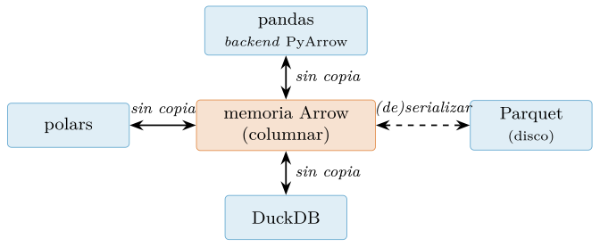
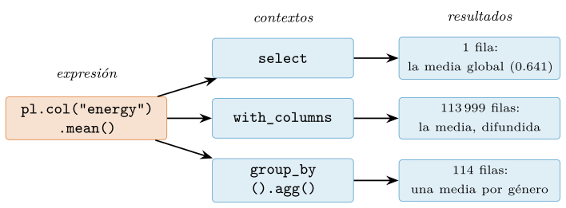
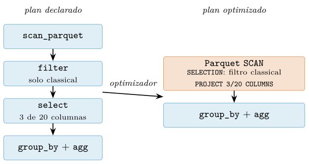

Capítulo 9. polars, Arrow y datos a gran escala
▶ Ejecutar este capítulo en Binder
La primera vez que se abre, Binder construye el entorno en la nube (unos 10-20 min); verás una pantalla de progreso. Después queda en caché y abre en segundos. Si parece que no responde, espera a que termine de construirse o vuelve a intentarlo.
Pocas incorporaciones al ecosistema de la ciencia de datos han tenido en años el efecto de polars. Lo inició Ritchie Vink en junio de 2020 como un experimento en Rust; alcanzó la versión 1.0 el 1 de julio de 2024 y llega a 2026, en su línea 1.42, convertido en una elección de primera fila (Polars developers 2026). No es «un pandas más rápido»: es un motor de consultas con forma de DataFrame. En su modo perezoso (lazy) las operaciones no se ejecutan una a una, sino que se acumulan en un plan de consulta (query plan) que un optimizador reordena y poda antes de tocar los datos, y la ejecución paraleliza por defecto sobre todos los núcleos. Con ello ataca a la vez los dos frentes que dejamos abiertos al medir pandas en el cap. 8 (§8.6): el tiempo y la memoria.
Este capítulo presenta polars y DuckDB —una base de datos analítica incrustada o embebida (embedded)—, y el contraste exige conocer bien pandas: no partimos de cero, sino del modelo de datos, los grupos y las combinaciones de tablas que estudiamos a fondo en el cap. 8. Empezaremos por el suelo que ambos pisan (§9.1): por qué el procesamiento columnar (column-oriented) exprime el procesador, qué es Apache Arrow y cómo permite que una tabla viaje entre bibliotecas sin copia (zero-copy), el puente que dejamos prometido al cerrar el capítulo anterior. Después, el protagonista (§9.2): expresiones, contextos y el modelo perezoso. DuckDB pondrá sobre la mesa el vocabulario SQL analítico —SELECT, GROUP BY, JOIN directamente sobre Parquet— que anunciamos en su día (§9.4). Cerraremos con los datos que desbordan la RAM —ejecución en flujo (streaming) y particionado—, un criterio honesto para elegir herramienta y un caso integrador de principio a fin.
El dato de trabajo sigue siendo el catálogo de música (maharshipandya 2022). Del cap. 5 heredamos data/processed/musica.parquet —el Spotify Tracks Dataset ya limpio: 113 999 pistas, 20 rasgos de audio y cero ausentes—, que el cap. 8 analizó con pandas. Aquí lo abriremos primero por dentro con Arrow y, en cuanto tengamos el modelo perezoso, lo consultaremos entero: es el mismo catálogo, cabe holgado en memoria, pero la maquinaria que aplicaremos es la que usaríamos con datos que no cupieran. Nota de versión: esta edición se ha verificado con polars 1.42.1, pyarrow 22.0.0 y duckdb 1.5.4 sobre CPython 3.11.
Del array a la columna: Arrow, el sustrato común
Antes de escribir la primera consulta en polars conviene entender qué comparten polars, DuckDB y el pandas moderno, porque esa pieza común explica tanto su velocidad como su interoperabilidad. Esta sección recupera el argumento columnar del cap. 5 y lo traslada del disco al procesador (§9.1.1), abre el formato Arrow con pyarrow (§9.1.2) y comprueba, midiendo direcciones de memoria, que las tres bibliotecas pueden compartir los mismos bytes (§9.1.3).
Por qué columnar
En el cap. 5 justificamos el almacenamiento columnar en disco (§5.5.1): leer solo las columnas que la consulta necesita y comprimir mejor lo homogéneo. Aquel argumento hablaba de entrada/salida; hay un segundo, igual de importante, que habla del procesador. Una columna contigua en memoria se recorre al ritmo de la caché: cada línea que sube trae 64 bytes útiles —dieciséis float32 consecutivos—, el hardware anticipa las siguientes, y las instrucciones SIMD —una instrucción, varios datos— que ya explotaba la vectorización de NumPy (§7.2) operan sobre varios valores por ciclo. En una disposición por filas, en cambio, los valores de una misma columna llegan intercalados con el resto de los campos, y la caché arrastra bytes que nadie va a mirar.
Las bases de datos llegaron primero a esta conclusión. El proyecto MonetDB/X100 mostró que la ejecución clásica, que interpreta la consulta tupla a tupla, deja el procesador ocioso, y propuso evaluar cada operador sobre lotes de valores —vectores dimensionados para caber en la caché— (Boncz et al. 2005); el modelo columnar analítico que nació de esa línea está sistematizado en (Abadi et al. 2013), y polars y DuckDB son herederos directos de ese diseño. La distinción clásica ayuda a situarse (Kleppmann 2017): los sistemas transaccionales (OLTP) tocan pocas filas enteras muchas veces por segundo —dar de alta un pedido, actualizar un saldo— y agradecen la disposición por filas; los analíticos (OLAP) recorren millones de filas pero pocas columnas para agregarlas, y agradecen la columnar. La ciencia de datos vive casi siempre en el segundo régimen: de ahí que todo el capítulo sea columnar.
El formato Arrow
Apache Arrow es una especificación de cómo disponer datos tabulares en memoria —columnar e independiente del lenguaje— acompañada de implementaciones para C++, Rust, Java o Python; es proyecto de primer nivel de la Fundación Apache desde febrero de 2016 (Apache Software Foundation 2026a). Lo presentamos en el cap. 5 como el análogo en memoria de Parquet (§5.5.2), y la pareja se reparte el trabajo: Parquet comprime y codifica por bloques para durar en el disco (Apache Software Foundation 2026b); Arrow mantiene los valores descomprimidos, contiguos y alineados, listos para el procesador. Pasar de uno a otro es, precisamente, (de)serializar. La representación de una columna es de una sencillez deliberada: un buffer contiguo con los valores, un mapa de bits de validez con un bit por valor —uno presente, cero nulo— y, para columnas categóricas, un diccionario: los valores se guardan como índices enteros y las categorías, una sola vez. Abramos con pyarrow la tabla de música, quedándonos con cinco columnas para no listar las veinte y pidiendo que track_genre vuelva como diccionario, que es como Parquet ya la guarda en disco:
import pyarrow.parquet as pq
tabla = pq.read_table("data/processed/musica.parquet",
columns=["track_genre", "popularity",
"energy", "tempo", "explicit"],
read_dictionary=["track_genre"])
print(tabla.schema)
# track_genre: dictionary<values=string, indices=int32, ordered=0>
# popularity: int64
# energy: double
# tempo: double
# explicit: bool
print(tabla.num_rows, tabla.nbytes) # 113999 3250234
energia = tabla.column("energy")
print(energia.null_count, energia.nbytes) # 0 926242
print(tabla.column("track_genre").chunk(0).dictionary[:3])
# [
# "acoustic",
# "afrobeat",
# "alt-rock"
# ]El esquema es exactamente el que declaró nuestro pipeline (§5.10): los tipos sobrevivieron intactos al viaje por el disco. Y la aritmética de los bytes es transparente: la columna energy ocupa 926 242 bytes, que son 911 992 de valores (8 bytes por cada una de las 113 999 pistas float64) más 14 250 del mapa de validez (un bit por pista). Este catálogo llega sin ausentes —null_count vale 0, todos los bits del mapa a uno—, y aun así Arrow reserva el mapa: cuando hay ausentes son ceros en él, no centinelas incrustados entre los valores, de modo que cualquier tipo puede ser nulo sin cambiar de dtype, una idea que pandas solo alcanzó con el backend PyArrow (§8.3.3) y que en polars veremos como norma. La columna track_genre, por su parte, es un diccionario: 113 999 índices int32 más los 114 nombres de género guardados una sola vez, la misma economía que logramos con la categoría de pandas en el cap. 8. Las cinco columnas caben así en 3 250 234 bytes.
Los puentes: el mismo dato sin copiar
Un formato común solo vale si las bibliotecas pueden compartirlo sin traducirlo. Para eso Arrow define la interfaz C de datos (C Data Interface): un puñado de estructuras en C con las que una biblioteca entrega a otra los punteros a sus buffers; los datos no se mueven, cambia quién los mira. En Python el mecanismo se envuelve en el protocolo PyCapsule: todo objeto que expone __arrow_c_stream__ puede ser consumido por cualquier otra biblioteca del ecosistema, y en 2026 lo exponen pyarrow, polars, DuckDB y pandas. Este es el puente que prometimos al cerrar el cap. 8, donde vimos el backend PyArrow de pandas (§8.3.3) con sus cadenas eficientes —las que pandas 3 adopta por defecto (Van den Bossche 2024), con PyArrow recomendado pero no obligatorio (Roeschke y Hoefler 2023)—. Comprobemos que el puente es literal, siguiendo con la tabla del listado anterior:
import pyarrow as pa
import polars as pl
import pandas as pd
df_pl = pl.DataFrame(tabla) # Arrow -> polars, sin copiar
print(df_pl.shape) # (113999, 5)
print(hasattr(df_pl, "__arrow_c_stream__")) # True
vuelta = pa.table(df_pl) # polars -> Arrow, via PyCapsule
antes = tabla.column("energy").chunk(0).buffers()[1].address
ahora = vuelta.column("energy").chunk(0).buffers()[1].address
print(antes == ahora) # True: el MISMO buffer
df_pd = tabla.to_pandas(types_mapper=pd.ArrowDtype)
print(df_pd["energy"].dtype) # double[pyarrow]pl.DataFrame acepta la tabla de pyarrow y la envuelve sin copiarla; pa.table hace el viaje inverso consumiendo la PyCapsule de polars. La prueba de que nada se ha duplicado está en la comparación central: la dirección de memoria del buffer de energy es la misma antes y después del viaje de ida y vuelta —son los mismos bytes con dos dueños—. Y to_pandas con types_mapper=pd.ArrowDtype produce un DataFrame de pandas cuyas columnas siguen respaldadas por los buffers de Arrow, como delata el dtype double[pyarrow] del cap. 8.

La figura 9.1 resume la geometría del capítulo: en el centro, la memoria Arrow; alrededor, tres bibliotecas que la intercambian sin copia; a un lado, Parquet, el único tránsito con coste de (de)serialización. polars implementa el formato de forma nativa en Rust —sus columnas son arrays de Arrow— y DuckDB, un motor columnar diseñado para el análisis incrustado (Raasveldt y Mühleisen 2019), lo consume y lo produce directamente. A explotar ese sustrato dedicamos las dos próximas secciones: primero el motor de consultas de polars (§9.2) y después el SQL analítico de DuckDB (§9.4).
polars: un DataFrame para el multinúcleo
El capítulo anterior cerró con una promesa (§8.6): una herramienta que atacara a la vez los dos frentes del rendimiento —tiempo y memoria— con un plan de consulta optimizado. polars es esa herramienta, y su cimiento es el formato Arrow que acabamos de presentar (§9.1.2): cada columna de un DataFrame de polars es un array Arrow. En esta sección conoceremos su diseño y su pieza más original —el lenguaje de expresiones— en modo ansioso o inmediato (eager), en el que cada operación se evalúa en el acto; en la §9.3 veremos que el mismo lenguaje, sin cambiar una letra, funciona también en modo perezoso (lazy).
El diseño
polars nació en junio de 2020 como proyecto personal de Ritchie Vink, un ingeniero neerlandés que lo escribió en Rust, un lenguaje compilado sin recolector de basura que permite paralelismo seguro y un control fino de la memoria (Vink 2021). La versión 1.0 llegó el 1 de julio de 2024 y en 2026 la serie estable es la 1.42.x —este libro usa la 1.42.1 (Polars developers 2026)—. Más que una reimplementación rápida de pandas, polars es una revisión de sus decisiones de diseño; conviene tener claras las cuatro que más notará quien venga del cap. 8:
No hay índice de filas. Donde pandas alineaba todas las operaciones por las etiquetas del índice (§8.1), polars declara en su guía de migración que cada fila se identifica solo por su posición (Polars developers 2026): desaparecen
loc/iloc, las reindexaciones y las ambigüedades que el índice arrastraba.Tipos estrictos. Cada columna tiene un tipo fijo y las conversiones se piden con
cast; no hay promociones silenciosas como las que vimos al perfilar memoria en la §7.1.2.Un único ausente:
null. Vale para todos los tipos —enteros, fechas, cadenas, booleanos— gracias al mapa de bits de validez de Arrow (§9.1.2). Donde el pandas clásico convertía enfloat64un entero con ausentes, aquí la columna sigue siendo entera;NaNes solo un flotante más, no una marca de ausencia.Paralelismo por defecto. NumPy y pandas ejecutan casi todas sus operaciones en un solo hilo (Harris et al. 2020), que la vectorización del cap. 7 (§7.2) exprime; polars reparte entre los núcleos las operaciones sobre columnas distintas sin que el usuario configure nada.
La distinción entre null y NaN es tan importante —y tan distinta del convenio de pandas— que merece comprobarse en el intérprete:
import polars as pl
s = pl.Series("energy", [0.75, None, float("nan")])
print(s.dtype) # Float64
print(s.is_null().to_list()) # [False, True, False]
print(s.is_nan().to_list()) # [False, None, True]
enteros = pl.Series("popularity", [40, None, 80])
print(enteros.dtype, enteros.null_count()) # Int64 1Para is_null, el NaN de la tercera posición es un flotante perfectamente válido; para is_nan, el null de la segunda no es ni verdadero ni falso: es desconocido, y el ausente se propaga, como la lógica de tres valores que veremos reaparecer cuando hablemos SQL con DuckDB más adelante en este capítulo. Y la serie entera con un ausente sigue siendo Int64, sin conversión alguna.
Nuestro primer DataFrame no puede ser otro que el catálogo de música que dejó preparado el pipeline del cap. 5 (§5.10), el mismo fichero que pandas leyó en la §8.1: mismo dato, otra herramienta. polars imprime sus tablas enmarcadas con caracteres de caja; en los listados reproducimos esa salida simplificada, con las mismas filas y cabeceras pero sin el marco (y proyectando cinco columnas de las veinte para no desbordar el margen):
musica = pl.read_parquet("data/processed/musica.parquet")
print(musica.shape) # (113999, 20)
print(musica.select("track_name", "track_genre",
"popularity", "energy", "tempo").head(3))
# shape: (3, 5)
# track_name track_genre popularity energy tempo
# str str i64 f64 f64
# Comedy acoustic 73 0.461 87.917
# Ghost - Acoustic acoustic 55 0.166 77.489
# To Begin Again acoustic 57 0.359 76.332Quien compare con la salida de head del cap. 8 notará que falta la columna de índice a la izquierda —no existe— y que el tipo de cada columna aparece en la propia cabecera (str, str, i64, f64, f64): en un sistema de tipos estricto, el esquema es parte de la tabla. Las cadenas de track_name y track_genre viajan como str de primera clase, sin el dtype object que pandas arrastraba, y los rasgos de audio en float64, la precisión que fijamos al perfilar tipos en la §7.1.2.
El lenguaje de expresiones
La pieza central de la interfaz de polars no es ningún método del DataFrame, sino un objeto aparentemente humilde: la expresión. pl.col("energy") no extrae ninguna columna; nombra una columna llamada energy, de cualquier tabla que la tenga, y a partir de ese nombre podemos describir una transformación completa encadenando métodos:
media = pl.col("energy").mean().round(3).alias("media")
print(type(media))
# <class 'polars.expr.expr.Expr'>
print(media)
# col("energy").mean().round().alias("media")No se ha calculado nada: no hay dato alguno al que aplicar la media. El objeto Expr es la descripción de un cálculo —tómese la columna energy, promédiese, redondéese, llámese media al resultado—, como una receta que aún no ha pasado por la cocina; su representación impresa (que abrevia los argumentos, como el 3 de round) es literalmente esa descripción (Janssens y Nieuwdorp 2025). Las expresiones se componen con los operadores habituales de Python, que también quedan sin evaluar:
doble = (pl.col("energy") * 2).alias("doble")
es_energetica = pl.col("energy") > 0.8
print(es_energetica)
# [(col("energy")) > (dyn float: 0.8)]Aritmética, comparaciones, agregaciones, manipulación de fechas o cadenas: todo el vocabulario que en pandas se repartía entre métodos, funciones de NumPy y accesores como .str o .dt vive aquí dentro de la expresión. ¿Y cuándo se ejecuta por fin la receta? Cuando un contexto la evalúa.
Los contextos
Un contexto es un método del DataFrame que recibe expresiones, las evalúa contra sus datos y decide qué forma tiene el resultado. Los cuatro que cubren casi todo el trabajo son select, with_columns, filter y group_by().agg(). El primero, select, devuelve solo las columnas que describen sus expresiones:
print(musica.select(
pl.col("energy").mean().round(3).alias("media"),
(pl.col("tempo") == 0).sum().alias("rotas"),
))
# shape: (1, 2)
# media rotas
# f64 u32
# 0.641 157Reaparecen las 157 pistas con tempo igual a cero —un tempo de 0 BPM es un imposible físico, la lectura rota que el cap. 10 tratará como ausente—, aquí contadas con una comparación booleana; la media de energy sale directa, sin cast, porque el rasgo ya es float64. Y como las dos expresiones son independientes, polars las evalúa en paralelo: es la forma que toma el paralelismo por defecto dentro de cualquier contexto, sin hilos ni configuración por nuestra parte.
El segundo contexto, with_columns, evalúa las mismas expresiones pero añade las columnas resultantes a la tabla (o las sustituye, si el nombre ya existe), conservando todo lo demás:
con_extra = musica.with_columns(
(pl.col("energy") > 0.8).alias("es_energetica"),
(pl.col("duration_ms") / 1000).round(1).alias("dur_s"),
)
print(con_extra.shape) # (113999, 22)
print(con_extra.columns[-2:]) # ['es_energetica', 'dur_s']El tercero, filter, espera expresiones booleanas y conserva las filas donde valen True, el papel que en pandas hacían las máscaras de la §8.2.3; varias condiciones separadas por comas se combinan como una conjunción:
habladas = musica.filter(pl.col("speechiness") > 0.96)
print(habladas.shape) # (11, 20)
print(habladas["track_genre"].unique().to_list()) # ['comedy']Solo 11 pistas superan una locuacidad (speechiness) de 0,96, y todas son de comedia: son grabaciones habladas —monólogos, sketches—, no música, y el rasgo que mide la proporción de palabra las delata sin excepción. Y el cuarto contexto, group_by().agg(), es el dividir-aplicar-combinar de la §8.4 con las agregaciones descritas como expresiones; agrupar por género daría 114 filas, así que nos ceñimos al puñado de seis de firma reconocible:
seis = ["classical", "hip-hop", "jazz", "pop", "reggaeton", "rock"]
resumen = (musica.filter(pl.col("track_genre").is_in(seis))
.group_by("track_genre").agg(
pl.col("energy").mean().round(3).alias("media"),
pl.col("energy").count().alias("n"),
pl.col("energy").max().round(3).alias("pico"),
).sort("track_genre"))
print(resumen)
# shape: (6, 4)
# track_genre media n pico
# str f64 u32 f64
# classical 0.19 1000 0.953
# hip-hop 0.683 1000 0.994
# jazz 0.353 1000 0.938
# pop 0.606 1000 0.986
# reggaeton 0.739 1000 0.969
# rock 0.679 1000 0.99Las cifras cuadran con las que obtuvimos con pandas en la §8.4: cada género tiene su firma de energy, de 0,19 en classical —música acústica— a 0,739 en reggaeton, sobre 1 000 pistas por género —count, como en pandas, ignoraría cualquier null, aunque aquí no haya—. Un detalle: group_by no garantiza el orden de los grupos (el paralelismo tiene ese precio), de ahí el sort final.
La consecuencia más elegante del diseño es que la misma expresión significa cosas distintas según el contexto que la evalúe:
media = pl.col("energy").mean().round(3)
print(musica.select(media).item()) # 0.641
print(musica.group_by("track_genre").agg(media).shape) # (114, 2)
print(musica.with_columns(media.alias("g")).shape) # (113999, 21)En select, la media colapsa la tabla a una fila; en group_by().agg() produce un valor por grupo; en with_columns, donde el resultado debe casar con las 113 999 filas originales, el agregado se difunde a todas ellas, al estilo del broadcasting que conocimos en NumPy (§7.2). La figura 9.2 resume esta idea, que conviene fijar antes de seguir: expresiones que describen, contextos que evalúan.

energy— evaluada por tres contextos distintos: select la colapsa a una fila, with_columns la difunde a las 113 999 filas originales y group_by().agg() la calcula por grupo.Todo lo anterior ha ocurrido en modo inmediato: cada contexto se ha evaluado al instante, como haría pandas. La verdadera recompensa de separar descripción y cálculo llegará en la §9.3: si las expresiones no se ejecutan hasta que un contexto las reclama, nada impide acumular contextos enteros y dejar que polars optimice el plan completo antes de tocar un byte.
El modo perezoso: planes de consulta y optimizador
Todo el polars que hemos escrito hasta aquí trabaja como NumPy y pandas (caps. 7 y 8): cada expresión se evalúa en cuanto se escribe y devuelve su resultado. Es el modo inmediato o ansioso (eager), y no es lo que hace especial a esta biblioteca. Su seña de identidad es el modo perezoso (lazy): las operaciones no se ejecutan al declararse, sino que se anotan en un plan de consulta (query plan) que un optimizador revisa, poda y reordena antes de ejecutarlo todo de una vez. El cap. 8 se despidió (§8.6) prometiendo que polars atacaba los dos frentes del rendimiento —el tiempo y la memoria— con un plan de consulta optimizado; esta sección cumple esa promesa.
Del DataFrame al LazyFrame
El modo perezoso tiene dos puertas de entrada. La discreta: cualquier DataFrame se convierte en su versión perezosa con .lazy(), útil cuando los datos ya están en memoria. Y la importante: empezar perezoso desde el propio fichero con pl.``scan_parquet o pl.``scan_csv, gemelas de las funciones read_* cuyo prefijo es toda una declaración de intenciones: scan_ no carga nada. Devuelve un LazyFrame que solo sabe dónde está el fichero y qué esquema tiene; a Parquet le basta para ello el bloque de metadatos del pie del fichero que estudiamos en el cap. 5. Repitamos en perezoso el resumen por género que el modo inmediato nos dio en la §9.2.3, sobre el mismo musica.parquet que dejó el pipeline del cap. 5 (§5.10):
import polars as pl
seis = ["classical", "hip-hop", "jazz", "pop", "reggaeton", "rock"]
resumen = (
pl.scan_parquet("data/processed/musica.parquet")
.filter(pl.col("track_genre").is_in(seis))
.group_by("track_genre")
.agg(
media=pl.col("energy").mean(),
n=pl.len(),
pico=pl.col("energy").max(),
)
.with_columns(pl.col("media", "pico").round(3))
.sort("track_genre")
)
print(type(resumen))
# <class 'polars.lazyframe.frame.LazyFrame'>La cadena es la misma que en modo inmediato —filtrar al puñado de seis géneros, agrupar, agregar con nombre y redondear, sin cast porque energy ya viaja en float64—, con scan_ donde antes decía read_. Pero el efecto es otro: la llamada vuelve al instante, aunque el Parquet ocupara gigabytes, porque no se ha leído ni una fila. resumen no contiene datos; es una receta. Hasta imprimirlo lo delata: print(resumen) no muestra tabla alguna —no la hay—, sino una descripción textual del trabajo pendiente encabezada por «naive plan», el plan ingenuo del que hablaremos enseguida. La ejecución solo ocurre al pedir el resultado con collect():
resultado = resumen.collect() # AQUI se ejecuta todo el plan
print(resultado)
# shape: (6, 4)
# track_genre | media | n | pico
# --- | --- | --- | ---
# str | f64 | u32 | f64
# classical | 0.19 | 1000 | 0.953
# hip-hop | 0.683 | 1000 | 0.994
# jazz | 0.353 | 1000 | 0.938
# pop | 0.606 | 1000 | 0.986
# reggaeton | 0.739 | 1000 | 0.969
# rock | 0.679 | 1000 | 0.99collect() entrega el plan completo al optimizador y lo ejecuta de una sola vez; el resultado es un DataFrame corriente (como en el resto del capítulo, reproducimos la tabla simplificada a ASCII: el original enmarca las celdas con líneas Unicode). Las cifras cuadran una a una con el modo inmediato de la §9.2.3 y con el groupby de pandas del cap. 8 (§8.4): la firma de energy por género, de 0,19 en classical a 0,739 en reggaeton, sobre 1 000 pistas cada uno. Mismo dato, mismas cifras, cuarto camino.
Este esquema —declarar primero, ejecutar después— es exactamente el de una base de datos SQL aplicado al DataFrame. Una consulta SELECT no dice cómo recorrer las tablas: describe el resultado deseado, y es el planificador del motor quien elige el camino. polars traslada ese contrato a nuestro terreno: encadenamos verbos como si escribiéramos pandas, pero el motor recibe la frase completa antes de mover un solo byte, y con ella decide cómo. Cuando en la §9.4 hablemos SQL de verdad con DuckDB, el salto será corto: llevamos toda esta sección pensando como una base de datos.
La idea tampoco es nueva en este libro. En el cap. 5 practicamos la evaluación perezosa a mano: los generadores que recorrían un CSV línea a línea sin cargarlo entero (§5.9.1) y la lectura por trozos con la que agregamos más datos de los que cabían en memoria (§5.9.2). Entonces el optimizador éramos nosotros: decidíamos a mano qué columnas conservar y qué filas descartar, y en qué momento. scan_csv y scan_parquet institucionalizan aquella disciplina artesanal: la pereza deja de ser una técnica que aplicamos nosotros y pasa a ser el contrato del motor (Polars developers 2026).
El optimizador a la vista
¿Y qué optimiza exactamente el optimizador? No hace falta creerlo por fe: explain() imprime el plan real que collect() ejecutará. Tomemos una consulta sencilla sobre el catálogo —las pistas de classical, quedándonos con el género, la energía y lo acústico— y pidámosle cuentas; su salida es texto ASCII puro y la reproducimos tal cual la imprime:
consulta = (
pl.scan_parquet("data/processed/musica.parquet")
.filter(pl.col("track_genre") == "classical")
.select("track_genre", "energy", "acousticness")
)
print(consulta.explain())
# Parquet SCAN [data/processed/musica.parquet]
# PROJECT 3/20 COLUMNS
# SELECTION: [(col("track_genre")) == ("classical")]
# ESTIMATED ROWS: 113999El plan optimizado entero cabe en un único nodo: el escaneo del Parquet. Nuestro filter ha desaparecido como paso separado y reaparece dentro del escaneo, en la línea SELECTION: es el empuje de predicados (predicate pushdown), la condición viaja hasta el lector y las filas que no la cumplen se descartan según se leen, sin que la tabla completa llegue a existir en memoria. La línea PROJECT 3/20 COLUMNS es el empuje de proyecciones (projection pushdown): de las veinte columnas del fichero solo se leerán las tres que la consulta usa, y como Parquet es columnar (cap. 5), ese «no leer» es literal: los bytes de popularity, tempo y las otras quince ni siquiera salen del disco. Cierra el nodo una estimación de cardinalidad (ESTIMATED ROWS) obtenida de los metadatos: 113 999 filas por escanear.
¿Con qué lo estamos comparando? explain(optimized=False) imprime el plan ingenuo, el que calca nuestro código sin optimizar:
print(consulta.explain(optimized=False))
# SELECT [col("track_genre"), col("energy"), col("acousticness")]
# FILTER [(col("track_genre")) == ("classical")]
# FROM
# Parquet SCAN [data/processed/musica.parquet]
# PROJECT */20 COLUMNS
# ESTIMATED ROWS: 113999Los planes se leen de abajo hacia arriba: primero se ejecuta el nodo inferior. El ingenuo escanea el fichero completo (PROJECT */20 COLUMNS: las veinte columnas), después filtra y al final proyecta, con una tabla intermedia entre paso y paso. El optimizado hace el mismo trabajo sin salir del escaneo: al recogerla, consulta.collect() devuelve las mismas 1 000 filas de classical de las 113 999 del fichero por ambos caminos. Sobre este Parquet que cabe en memoria la diferencia es anecdótica; sobre uno de millones de filas, leer tres columnas de veinte y filtrar durante la lectura separa un paseo de una mudanza.
La agregación no estorba a nada de esto: si a consulta le encadenamos .group_by("track_genre") con la media de energy y de acousticness, el plan optimizado conserva un nodo AGGREGATE en cabeza que trabaja sobre el mismo escaneo podado, con su SELECTION y su PROJECT 3/20 COLUMNS intactos. La figura 9.3 resume la reescritura completa.

SELECTION del escaneo (empuje de predicados), la selección de columnas viaja al mismo nodo (PROJECT 3/20 COLUMNS, empuje de proyecciones) y la agregación trabaja sobre ese escaneo podado.El repertorio del optimizador no se agota en los dos empujes: simplifica expresiones y elimina operaciones sin efecto, reordena pasos para adelantar los que reducen datos y detecta subplanes comunes —un mismo escaneo usado por dos ramas de la consulta— para calcularlos una sola vez y servirlos desde una caché (Polars developers 2026; Janssens y Nieuwdorp 2025). La lista crece con cada versión, y ante la duda explain() siempre cuenta la verdad de la versión instalada.
Un DataFrame con plan de consulta y optimizador pide a gritos datos que le opongan resistencia. El resto del capítulo se los dará: el catálogo entero de música —y la maquinaria que escalaría a datos que no cupieran—, a cuya prueba someteremos todo lo anterior.
DuckDB: SQL analítico sobre tus ficheros
La tercera pieza de este capítulo no es una biblioteca de DataFrame, sino una base de datos. Mark Raasveldt y Hannes Mühleisen crearon DuckDB en el CWI de Ámsterdam y lo presentaron en 2019 como una base de datos analítica incrustada o embebida (embedded): un motor SQL completo que vive en el proceso de nuestro intérprete, sin servidor que instalar ni administrar (Raasveldt y Mühleisen 2019). Con licencia MIT y custodiado por la DuckDB Foundation, alcanzó la 1.0.0 en junio de 2024 y hoy va por la serie 1.5; nuestro entorno usa la 1.5.4 (DuckDB Foundation 2026).
Se le suele llamar «el SQLite de la analítica», y la etiqueta es exacta. SQLite, que conocimos junto a la DB-API en §5.8 (Lemburg 1999; Python Software Foundation 2026), es una base embebida para cargas transaccionales —filas sueltas que se buscan, insertan o modifican— y por eso almacena fila a fila. DuckDB copia la receta del despliegue (un import y cero configuración) e invierte el caso de uso: consultas analíticas que recorren tablas enteras filtrando, agrupando y agregando, con un motor columnar y vectorizado que procesa las columnas por lotes, el principio que acelera a NumPy, a Arrow y a polars.
De hecho, ya lo usamos: el integrador del cap. 5 lanzó una única consulta DuckDB sobre el Parquet de música (§5.10.6) como anticipo, y el cap. 8 prometió que el vocabulario SQL se aprendería aquí. Esta sección lo cumple con cinco construcciones —SELECT/WHERE, GROUP BY, ORDER BY/LIMIT, JOIN y NULL— que cubren la mayor parte del SQL analítico cotidiano.
El vocabulario SQL sobre un Parquet
Trabajaremos sobre data/processed/ musica.parquet, el fichero del pipeline del cap. 5: 113 999 pistas, 20 rasgos de audio, 114 géneros y cero ausentes. La función duckdb.sql() no exige abrir conexión ni cursor (usa una base en memoria global), y en el FROM puede ir, entre comillas simples, la ruta de un Parquet o CSV: DuckDB lo consulta in situ, sin cargarlo antes en ninguna estructura de Python. El resultado es una relación: una descripción de la consulta que, fiel al espíritu perezoso del capítulo, no se ejecuta hasta que alguien la materializa. (DuckDB imprime las relaciones con cajas de caracteres Unicode; en los comentarios de salida las simplificamos a trazos ASCII.)
import duckdb
rel = duckdb.sql("""
SELECT track_name, popularity, energy
FROM 'data/processed/musica.parquet'
WHERE track_genre = 'reggaeton' AND popularity > 95
""")
print(rel)
# +------------------+------------+--------+
# | track_name | popularity | energy |
# | varchar | int64 | double |
# +------------------+------------+--------+
# | Tití Me Preguntó | 97 | 0.715 |
# | Me Porto Bonito | 97 | 0.712 |
# | La Bachata | 98 | 0.679 |
# +------------------+------------+--------+La consulta se lee sola: SELECT elige columnas (la proyección) y WHERE elige filas (el filtro). Solo tres reggaetones superan una popularidad de 95 —éxitos de Bad Bunny como Tití Me Preguntó y Me Porto Bonito— y bajo las cabeceras aparecen los tipos del esquema Parquet del cap. 5. Hay más de lo que parece: proyección y filtro son los dos empujes que el optimizador de polars aplicaba en §9.3.2, solo que aquí no hay nada que activar: el motor lee solo las columnas implicadas y salta bloques de filas usando las estadísticas del propio Parquet.
La agregación por grupos —nuestro patrón favorito desde §8.4— se escribe con GROUP BY y funciones de agregado (AVG, COUNT, MAX, SUM) en el SELECT:
print(duckdb.sql("""
SELECT track_genre, ROUND(AVG(energy), 3) AS media,
COUNT(*) AS n
FROM 'data/processed/musica.parquet'
WHERE track_genre IN ('classical', 'hip-hop', 'jazz',
'pop', 'reggaeton', 'rock')
GROUP BY track_genre
ORDER BY track_genre
""").fetchall())
# [('classical', 0.19, 1000), ('hip-hop', 0.683, 1000),
# ('jazz', 0.353, 1000), ('pop', 0.606, 1000),
# ('reggaeton', 0.739, 1000), ('rock', 0.679, 1000)]fetchall() devuelve una lista de tuplas al más puro estilo de la DB-API, y las cifras cuadran con las que pandas nos dio en §8.4: la firma de energy por género, 0.19 en classical y 0.739 en reggaeton, sobre 1 000 pistas cada uno. El ORDER BY final no es decorativo: sin él, SQL no garantiza ningún orden en el resultado. Esa misma cláusula, combinada con LIMIT, da el idioma del «top-\(N\)»:
top = duckdb.sql("""
SELECT track_name, track_genre, popularity
FROM 'data/processed/musica.parquet'
ORDER BY popularity DESC, track_name, track_genre
LIMIT 5
""")
print(top)
# +---------------------------------------+-------------+------------+
# | track_name | track_genre | popularity |
# | varchar | varchar | int64 |
# +---------------------------------------+-------------+------------+
# | Unholy (feat. Kim Petras) | dance | 100 |
# | Unholy (feat. Kim Petras) | pop | 100 |
# | Quevedo: Bzrp Music Sessions, Vol. 52 | hip-hop | 99 |
# | I'm Good (Blue) | dance | 98 |
# | I'm Good (Blue) | edm | 98 |
# +---------------------------------------+-------------+------------+DESC ordena de mayor a menor (el ascendente es el defecto) y las claves siguientes desempatan: el mismo éxito figura bajo varios géneros —Unholy aparece en dance y en pop, ambos con popularidad 100—, porque una pista puede catalogarse en más de uno. El top-5 lo encabezan Unholy y el BZRP de Quevedo.
Nos falta cruzar tablas: el fichero guarda el género de cada pista, pero la familia sonora a la que pertenece —acústica, eléctrica, urbana— la ponemos nosotros. WITH ... AS (VALUES ...) define una tabla auxiliar en la propia consulta —el catálogo de familias— y JOIN ... ON la empareja con las pistas:
por_familia = duckdb.sql("""
WITH familias(track_genre, familia) AS (
VALUES ('classical', 'acustica'),
('jazz', 'acustica'),
('pop', 'electrica'),
('rock', 'electrica'),
('hip-hop', 'urbana'),
('reggaeton', 'urbana')
)
SELECT f.familia, ROUND(AVG(m.energy), 3) AS energy,
COUNT(*) AS n
FROM 'data/processed/musica.parquet' AS m
JOIN familias AS f ON m.track_genre = f.track_genre
GROUP BY f.familia
ORDER BY AVG(m.energy) DESC
""")
for fila in por_familia.fetchall():
print(fila)
# ('urbana', 0.711, 2000)
# ('electrica', 0.643, 2000)
# ('acustica', 0.271, 2000)JOIN es el equivalente SQL del merge que practicamos en §8.4.2: ON declara la condición de emparejamiento y los alias m y f abrevian cada tabla (existen también LEFT, RIGHT y FULL JOIN, primos del how= de pandas). Y aquí el dato real sí habla: la familia acústica (classical, jazz) suena a 0.271 de energy, menos de la mitad que la urbana (hip-hop, reggaeton) a 0.711, con la eléctrica (pop, rock) en medio. La firma acústica del género es real, y es la base de la clasificación por el sonido que abordaremos en los caps. 13 y 14.
Queda el ausente, que en SQL se llama NULL. Este catálogo llega completo, pero las 157 pistas con tempo igual a cero son lecturas rotas —un imposible físico—: NULLIF(tempo, 0) las convierte en NULL y deja ver las dos reglas del ausente. Primera: los agregados ignoran NULL —AVG divide entre las válidas, COUNT(x) cuenta no nulos y COUNT(*) cuenta filas—, la misma política que pandas aplicaba en §8.3. Segunda: NULL no es comparable; tempo = NULL no selecciona nada (comparar con NULL da NULL) y lo correcto es IS NULL o IS NOT NULL:
print(duckdb.sql("""
SELECT COUNT(*) AS filas,
COUNT(NULLIF(tempo, 0)) AS validas,
COUNT(*) - COUNT(NULLIF(tempo, 0)) AS rotas
FROM 'data/processed/musica.parquet'
""").fetchall())
# [(113999, 113842, 157)]
print(duckdb.sql("""
SELECT COUNT(*) FROM 'data/processed/musica.parquet'
WHERE NULLIF(tempo, 0) IS NOT NULL
""").fetchall())
# [(113842,)]Sobre energy, sin ausentes, AVG y COUNT cuentan las 113 999 pistas; el NULLIF y el IS NOT NULL solo hacen falta cuando queremos apartar las lecturas rotas.
DuckDB habla con todos
Una consulta sirve de poco si su resultado se queda dentro del motor. La relación de DuckDB se convierte a las tres estructuras tabulares del ecosistema con un método cada una:
medias = duckdb.sql("""
SELECT track_genre, ROUND(AVG(energy), 3) AS media
FROM 'data/processed/musica.parquet'
GROUP BY track_genre
ORDER BY track_genre
""")
df_pl = medias.pl() # DataFrame de polars
df_pd = medias.df() # DataFrame de pandas
tabla = medias.to_arrow_table() # tabla de Arrow
print(type(df_pl), type(df_pd), type(tabla), sep="\n")
# <class 'polars.dataframe.frame.DataFrame'>
# <class 'pandas.core.frame.DataFrame'>
# <class 'pyarrow.lib.Table'>Cuidado con .arrow(): desde la serie 1.5 no devuelve una tabla, sino un RecordBatchReader, un flujo de lotes para consumir resultados grandes por partes; la tabla la da to_arrow_table(). Estas conversiones cuestan poquísimo: el resultado ya es columnar y, como vimos en §9.1.3, Arrow ejerce de puente sin reserialización, así que mover el resultado a polars es casi gratis.
El puente funciona igual en sentido contrario: si el FROM menciona un nombre que no es tabla ni fichero, DuckDB busca en las variables de Python un DataFrame de pandas o de polars con ese nombre y lo consulta como si fuera una tabla: es el escaneo de sustitución (replacement scan):
df = pl.read_parquet("data/processed/musica.parquet")
picos = duckdb.sql("""
SELECT track_genre, ROUND(MAX(energy), 3) AS pico
FROM df -- df es la variable de arriba
WHERE track_genre IN ('classical', 'pop', 'reggaeton')
GROUP BY track_genre
ORDER BY track_genre
""").pl()
print(picos.rows())
# [('classical', 0.953), ('pop', 0.986), ('reggaeton', 0.969)]Los picos por género —0.953 en classical, 0.986 en pop— salen de la variable df sin que DuckDB la cargue en ninguna tabla propia. Con un DataFrame de pandas funcionaría exactamente igual; y para una base persistente o varias conexiones, duckdb.connect() devuelve el par conexión-cursor clásico de la DB-API de §5.8.
La promesa del vocabulario SQL queda saldada, y con ella tenemos dos lenguajes para la misma pregunta: la consulta SQL de DuckDB y la cadena de expresiones de polars. Gracias a Arrow, mezclarlos en un mismo pipeline —SQL para extraer y agregar, expresiones para el ajuste fino— apenas tiene peaje; cuándo conviene cada uno, y dónde queda pandas, lo discutiremos en §9.6.
Datos más grandes que la memoria
Seamos honestos antes de empezar: nada de lo que hemos manejado hasta aquí amenaza la memoria de un portátil corriente. Nuestro catálogo de música ocupa 8,7 megabytes en Parquet, y hasta un histórico de escuchas de años cabría holgadamente en la RAM de cualquier máquina moderna. Pero la frontera existe: tarde o temprano aparece el fichero de 50 GB en el portátil de 16, el histórico de reproducciones que nadie pensó en trocear, la exportación de la base de datos corporativa que «no abre». Las técnicas de esta sección —procesar por trozos y particionar el almacenamiento— son las que resuelven ese día, y tienen una virtud pedagógica: se aprenden exactamente igual con datos que sí caben. El código es el mismo; solo cambia el tamaño del problema.
Nuestro campo de pruebas será data/processed/musica.parquet, el catálogo que arrastramos desde el capítulo 5: las 113 999 pistas del Spotify Tracks Dataset, 20 rasgos de audio, 114 géneros y cero ausentes (maharshipandya 2022). El guion de acompañamiento src/cap09_polars.py lo consulta sin generar nada. En total, 113 999 pistas:
import polars as pl
lf = pl.scan_parquet("data/processed/musica.parquet")
resumen = lf.select(
n=pl.len(),
generos=pl.col("track_genre").n_unique(),
rotas=(pl.col("tempo") == 0).sum(),
).collect()
print(resumen.row(0))
# (113999, 114, 157)Un fichero de 8,7 MB, insistimos, no es «gran escala»; es una maqueta a la que aplicaremos, sin cambiar una línea, la maquinaria pensada para cuando los datos desbordan la memoria.
El motor en flujo
La evaluación perezosa que hemos explotado durante todo el capítulo tiene una consecuencia que aún no hemos aprovechado: si polars conoce el plan completo antes de ejecutar nada, puede decidir cómo ejecutarlo. Y una de sus opciones es hacerlo en flujo (streaming): en lugar de cargar la tabla entera y transformarla en memoria, el motor lee un trozo, lo empuja por todo el plan —filtro, agregado parcial—, lo descarta y pasa al siguiente. En ningún momento existe el dataset completo materializado; solo el trozo en curso y los acumuladores del resultado. Es importante saber que en polars 1.42 este motor es opcional: collect() a secas sigue usando el motor en memoria, y el modo en flujo se pide explícitamente con collect(engine="streaming"). (Si el lector encuentra por ahí collect(streaming=True), era la interfaz antigua: quedó obsoleta en la versión 1.25 y hoy sobrevive solo como alias con aviso de obsolescencia, condenado a desaparecer; el motor actual, reescrito por completo durante 2025, reparte el trabajo entre hilos en pequeñas porciones o morsels (Polars developers 2026).)
seis = ["classical", "hip-hop", "jazz", "pop", "reggaeton", "rock"]
consulta = (
pl.scan_parquet("data/processed/musica.parquet")
.filter(pl.col("track_genre").is_in(seis))
.group_by("track_genre")
.agg(media=pl.col("energy").mean(), n=pl.len())
.sort("track_genre")
)
res = consulta.collect(engine="streaming") # procesa por trozos
for genero, media, n in res.iter_rows():
print(f"{genero}: media {media:.3f} n={n}")
# classical: media 0.190 n=1000
# hip-hop: media 0.683 n=1000
# jazz: media 0.353 n=1000
# pop: media 0.606 n=1000
# reggaeton: media 0.739 n=1000
# rock: media 0.679 n=1000
print(res.equals(consulta.collect())) # TrueEl resultado es idéntico al del motor en memoria —las medias por género que ya son viejas conocidas— y, con un fichero tan pequeño, el tiempo también es indistinguible: del orden de 20 ms por ambas vías en nuestra máquina. La diferencia no está en la velocidad sino en el techo: el consumo de memoria del motor en flujo depende del tamaño del trozo, no del tamaño del fichero.
Hay un segundo movimiento que completa la jugada. Si el destino del resultado no es seguir trabajando en Python sino otro fichero, ni siquiera hace falta recogerlo: sink_parquet ejecuta el plan en flujo y va escribiendo el resultado a disco por trozos, de modo que ni la entrada ni la salida pasan enteras por la RAM.
from pathlib import Path
plan = (
pl.scan_parquet("data/processed/musica.parquet")
.filter(pl.col("track_genre") == "reggaeton")
)
plan.sink_parquet("data/processed/reggaeton.parquet")
fichero = Path("data/processed/reggaeton.parquet")
print(f"{fichero.stat().st_size / 1024:.0f} KB") # 72 KBAcabamos de destilar las 1 000 pistas de reggaeton a un Parquet de 72 KB sin materializar nada. Con nuestra maqueta es un gesto; con el fichero de 50 GB en el portátil de 16 es la diferencia entre poder y no poder: la misma pareja scan_parquet + sink_parquet filtra, transforma y reescribe un dataset que jamás cabría en memoria. Y conviene reconocer el patrón: es exactamente lo que hicimos a mano en el capítulo 5 cuando leímos el CSV por bloques con pandas (§5.9.2), solo que industrializado. Allí elegíamos el tamaño del bloque, manteníamos los acumuladores y combinábamos los parciales nosotros; aquí el motor decide los trozos, paraleliza y funde los resultados sin que el código lo mencione. Los dos frentes que medimos en el capítulo 8 (§8.6), tiempo y memoria, quedan cubiertos: el plan optimizado ataca el primero y el flujo, el segundo.
Particionar y podar
La otra mitad de la estrategia no ocurre al leer, sino al guardar. Si sabemos que el catálogo se consultará casi siempre por género, podemos almacenarlo ya troceado por esa columna, en el llamado particionado al estilo Hive: un directorio por valor, con el valor codificado en el nombre. En polars basta write_parquet con el parámetro partition_by:
df = pl.read_parquet("data/processed/musica.parquet")
df.write_parquet("data/processed/musica_por_genero",
partition_by="track_genre")
ruta = Path("data/processed/musica_por_genero")
partes = sorted(ruta.iterdir(), key=lambda p: p.name)
for p in partes[:3]:
fich = next(p.iterdir())
print(f"{p.name}/{fich.name} {fich.stat().st_size / 1024:.0f} KB")
# track_genre=acoustic/00000000.parquet 83 KB
# track_genre=afrobeat/00000000.parquet 83 KB
# track_genre=alt-rock/00000000.parquet 80 KBDonde antes había un fichero ahora hay un directorio con 114 subdirectorios track_genre=acoustic/, …, track_genre=world-music/, cada uno con su Parquet de unos 80 KB (polars conserva además la columna track_genre dentro de cada fichero, así que el conjunto sigue siendo autocontenido). El precio es modesto: los 114 trozos suman 9,6 MB frente a los 8,7 del fichero único, porque la compresión por columnas (Apache Software Foundation 2026b) trabaja mejor con trozos grandes. La recompensa llega al consultar: scan_parquet acepta un patrón glob y, con hive_partitioning=True, interpreta los nombres de directorio como una columna más. Y aquí ocurre lo interesante: si el plan filtra por esa columna, el optimizador descarta los ficheros que no pueden contener filas útiles antes de abrirlos. Es la poda de particiones (partition pruning), y explain la delata:
lf = pl.scan_parquet("data/processed/musica_por_genero/**/*.parquet",
hive_partitioning=True)
clasica = (
lf.filter(pl.col("track_genre") == "classical")
.select(energy=pl.col("energy").mean().round(3),
acustica=pl.col("acousticness").mean().round(3),
n=pl.len())
)
print(clasica.explain())
# ...
# Parquet SCAN [.../musica_por_genero/track_genre=classical/...]
# PROJECT 3/20 COLUMNS
# SELECTION: [(col("track_genre")) == ("classical")]
print(clasica.collect().row(0))
# (0.19, 0.92, 1000)El plan lo dice todo: de los 114 ficheros del glob, el SCAN lista uno —el de classical—, del que además proyecta solo tres columnas de veinte. Ese género aporta 1 000 pistas, y su firma es la que esperábamos: energy 0.19 y acousticness 0.92, música acústica de manual (en reggaeton el reparto se invertiría). En nuestra maqueta la poda apenas rasca unos milisegundos, porque todo cabe en la caché de disco; el argumento es de proporciones: la consulta lee una de cada 114 particiones, y sobre un catálogo de millones de pistas troceado por género, pedir uno tocaría un solo fichero. DuckDB, por cierto, juega al mismo juego con la misma convención: read_parquet(..., hive_partitioning = true) expone la columna de la ruta y poda particiones automáticamente con el predicado del WHERE (DuckDB Foundation 2026):
import duckdb
n_classical = duckdb.sql("""
SELECT COUNT(*) FROM read_parquet(
'data/processed/musica_por_genero/*/*.parquet',
hive_partitioning = true)
WHERE track_genre = 'classical'
""").fetchone()[0]
print(n_classical) # 1000Particionar es una decisión de diseño, no un automatismo: la columna de partición debe ser la que de verdad recorte las consultas frecuentes (el género aquí; a veces el artista, el país o el año de lanzamiento), y sin pasarse de fino, porque miles de particiones diminutas destruyen la ventaja que dan unas decenas de particiones razonables. Con esa decisión bien tomada, el dúo de esta sección —flujo para no desbordar la memoria, poda para no leer de más— cubre con un solo portátil un rango de tamaños que hace no tanto exigía un clúster.
Una medición a escala real: los taxis de Nueva York
Hemos aprendido el flujo y la poda con una maqueta, y lo hemos reconocido a cada paso: sobre 8,7 MB estas técnicas se explican, pero no se miden —el tiempo es indistinguible y el techo de memoria ni se roza—. Cerremos la sección midiéndolas una vez, de verdad, sobre datos que ya incomodan, para después soltar el dato y volver al catálogo que vertebra el libro. El conjunto canónico para esto es público y nativo en Parquet: los registros de viajes del Taxi and Limousine Commission de Nueva York, publicados por meses (New York City Taxi and Limousine Commission 2024). El guion src/cap09_taxis.py descarga un año del taxi amarillo —los doce ficheros mensuales de 2024— y lo consulta; los datos no se versionan (varios cientos de megabytes), se regeneran con una orden.
GLOB = "data/nyc_taxi/yellow_tripdata_2024-*.parquet"
print(pl.scan_parquet(GLOB).select(pl.len()).collect().item())
# 41169720 (doce ficheros mensuales, 661 MB en disco)Cuarenta y un millones de viajes: dos órdenes de magnitud sobre la maqueta, y ya no un juguete. Ahora la promesa del motor en flujo —«el consumo de memoria depende del tamaño del trozo, no del tamaño del fichero»— se puede poner en la balanza. Planteamos una consulta que obliga a recorrer el año entero pero cuyo resultado es diminuto —el gasto medio y el número de viajes por número de pasajeros— y la resolvemos por las dos vías:
consulta = (
pl.scan_parquet(GLOB)
.group_by("passenger_count")
.agg(gasto=pl.col("total_amount").mean(), n=pl.len())
)
res = consulta.collect(engine="streaming") # en flujo, por trozos
# La misma consulta por las dos vias, cada una en un proceso limpio
# (src/cap09_taxis.py), midiendo el pico de RAM residente:
# en memoria (carga las 19 columnas): 777 ms pico 6156 MB
# en flujo (proyecta 2, por trozos): 133 ms pico 759 MB
# -> x8 menos memoria, y de paso mas rapidoEl resultado numérico es idéntico por ambas vías; lo que cambia es el techo. El enfoque ingenuo —cargar el año entero con read_parquet y luego agregar— materializa los cuarenta y un millones de filas con sus diecinueve columnas, y su pico roza los 6 GB. El motor perezoso ve que la pregunta solo toca dos columnas, proyecta únicamente esas, y las empuja por el plan en morsels sin guardar nunca más que el trozo en curso, de modo que se queda por debajo del gigabyte —unas ocho veces menos—. Sobre esta máquina de 62 GB las dos vías caben; en el portátil de 16 con el navegador abierto, esos 6 GB son la diferencia entre la consulta que corre y la que muere con MemoryError. No es la velocidad —aunque también—: es no tener que caber.
Un apunte del oficio, de paso: aquel read_parquet del glob completo ni siquiera arranca sin ayuda, porque los ficheros del TLC mezclan la resolución de sus columnas de fecha —microsegundos unos meses, nanosegundos otros— y la unión exige unificarlas antes (el guion lo hace con un cast). El dato real rara vez es tan cortés como la maqueta; domesticarlo es el oficio del capítulo 10.
Y la poda de particiones, que en la maqueta apenas rascaba milisegundos, aquí se ve. Guardado el año troceado por mes al estilo Hive (§9.5.2) y pedido un solo mes, el escáner abre un fichero de los doce:
lf = pl.scan_parquet("data/nyc_taxi/por_mes/**/*.parquet",
hive_partitioning=True)
marzo = (lf.filter(pl.col("mes") == "2024-03")
.select(gasto=pl.col("total_amount").mean(), n=pl.len()))
# el plan lista 1 de los 12 ficheros; la consulta tarda 36 msLeer uno de cada doce ficheros no es economía retórica cuando cada uno pesa medio centenar de megabytes; y sobre un histórico de varios años troceado por mes, la misma consulta tocaría esa fracción del total sin que el código cambie. El argumento queda así medido, no proclamado: sobre un año de viajes reales, un solo portátil —sin clúster— agrega en flujo y poda particiones con la misma sintaxis que aplicamos al catálogo de música. Soltamos aquí el taxi; el resto del libro vuelve a la música.
pandas, polars o SQL: traducción y criterio
Al llegar aquí el lector maneja tres sintaxis para un mismo repertorio de operaciones: la de pandas, que dominó el capítulo 8; la de polars, protagonista de este; y el SQL analítico de DuckDB. Anunciamos entonces que este contraste exigía conocer bien pandas, y es el momento de cobrar esa promesa: primero un diccionario de traducción operación a operación, después un criterio honesto para elegir. La tesis de la sección: las tres herramientas son dialectos de un mismo modelo, y quien domina el modelo traduce entre ellas con soltura.
El diccionario de traducción
La tabla 9.1 recoge, cara a cara, operaciones que el lector ya ejecutó con pandas: el agregado por grupos de la §8.4, la combinación de tablas de la §8.4.2 o el remodelado de la §8.4.3. La columna derecha no es una transcripción de la documentación: cada equivalencia la hemos ejecutado sobre nuestro Parquet de música.
| Operación | pandas | polars |
|---|---|---|
| Leer Parquet | pd.read_parquet(f) |
pl.read_parquet(f); perezoso: pl.``scan_parquet(f) |
| Filtrar filas | df[df["v"] > 0] |
df.filter(pl.col("v") > 0) |
| Columna nueva | df["c"] = expr o df.assign(c=expr) |
df.with_columns(c=expr) |
| Agregar por grupos | df.groupby("g")["v"]``.mean() |
df.group_by("g")``.agg(``pl.col("v").mean()) |
| Combinar tablas | df.merge(otro, on="k") |
df.join(otro, on="k") |
| Tabla dinámica | df.pivot_table(index, columns, values, aggfunc) |
df.pivot(on, index, values, aggregate_function) |
| Ventana por grupo | df.groupby("g")["v"]``.transform("median") |
pl.col("v")``.median().over("g") |
| Ordenar | df.sort_values("v", ascending=False) |
df.sort("v", descending=True) |
| Contar valores | df["g"]``.value_counts() |
df["g"]``.value_counts() |
| Quitar ausentes | df.dropna(subset=["v"]) |
df.drop_nulls("v") |
| Quitar duplicados | df.drop_duplicates() |
df.unique() |
| Renombrar | df.rename(columns=d) |
df.rename(d) |
Dos avisos antes de usarla. Primero, la tabla es un mapa, no una biyección: los valores por defecto difieren en detalles que solo se descubren ejecutando (al ordenar, polars coloca los null al principio y pandas deja los NaN al final). Segundo, hay tres diferencias de fondo que despistan al traducir, y merecen algo más.
La primera: en polars no hay índice de filas. Es una decisión de diseño declarada: cada fila se identifica por su posición, y punto. Lo que en pandas pasaba por .loc y una etiqueta se convierte en un filtro sobre una columna corriente:
import pandas as pd
import polars as pl
ruta = "data/processed/musica.parquet"
medias_pd = (pd.read_parquet(ruta)
.groupby("track_genre", observed=True)["energy"].mean())
print(medias_pd.loc["classical"]) # el indice hace de llave
# 0.189827326
medias_pl = (pl.read_parquet(ruta)
.group_by("track_genre")
.agg(pl.col("energy").mean()))
print(medias_pl.filter(pl.col("track_genre") == "classical"))
# shape: (1, 2)
# +-------------+-----------+
# | track_genre | energy |
# | --- | --- |
# | str | f64 |
# +-------------------------+
# | classical | 0.189827 |
# +-------------+-----------+Obsérvese la contrapartida: en pandas, groupby convirtió la clave en índice, y devolverla a columna habría exigido el consabido reset_index; en polars el resultado de group_by ya es una tabla plana con track_genre como columna normal. La alineación automática por etiqueta, eso sí, hay que reformularla como un join explícito.
La segunda: no existe el dilema vista o copia. En la §7.4.2 distinguimos vistas de copias sobre arrays y en la §8.6.3 vimos a pandas resolver la ambigüedad con la copia al escribir. polars corta por lo sano: no hay asignación sobre porciones ni SettingWithCopyWarning, porque cada operación devuelve un DataFrame nuevo y el original queda intacto (gracias a Arrow, «nuevo» no significa «duplicado»: las columnas no modificadas se comparten en memoria):
df = pl.read_parquet(ruta)
dobles = df.with_columns(pl.col("energy") * 2)
print(dobles is df) # False: objeto nuevo
print(round(df["energy"].max(), 1)) # el original, intacto
# 1.0
print(round(dobles["energy"].max(), 1))
# 2.0La tercera: el texto es un tipo de primera clase. Donde pandas arrastraba el dtype object, como vimos en el capítulo 8, polars siempre ha tenido String —alias histórico Utf8— y Categorical estrictos:
print(pl.Series(["pop", "rock"]).dtype) # String
print(df["track_genre"].cast(pl.Categorical).dtype) # CategoricalEl criterio
Con el diccionario en la mano, queda la pregunta incómoda: ¿cuál usar? No hay una respuesta única; hay un criterio.
pandas sigue siendo la elección por su ecosistema (McKinney 2022; The pandas development team 2026): la mayoría de tutoriales, respuestas de foros e integraciones —scikit-learn, matplotlib, statsmodels— asumen un
DataFramede pandas en la frontera. Para tablas medianas, exploración interactiva y aprendizaje es un punto de partida razonable, mucho mejor tras el capítulo 8.polars gana cuando mandan el rendimiento o la memoria (Polars developers 2026; Janssens y Nieuwdorp 2025): tablas grandes, cadenas largas de transformaciones, paralelismo sin esfuerzo y, con el motor en flujo, más datos que RAM. Su plan de consulta optimizado ataca los dos frentes —tiempo y memoria— que medimos en la §8.6, y sus pipelines declarativos son más legibles cuanto más complejos.
SQL sobre DuckDB brilla cuando el problema es naturalmente relacional —uniones y agregados sobre ficheros en disco, sin cargar nada— y cuando hay que compartir el resultado: una consulta SQL la reutiliza gente que jamás abrirá Python.
La recomendación pedagógica de este libro es otra: aprende el modelo y trata las herramientas como dialectos. Lo que hay que interiorizar —la organización columnar, la vectorización del capítulo 7, la evaluación perezosa, el dividir-aplicar-combinar de la §8.4— es común a las tres: pandas nació para traer ese modelo de tablas y agregados al ecosistema Python (McKinney 2010), y polars y DuckDB lo reimplementan. Quien entiende el modelo cambia de herramienta en una tarde; quien memoriza métodos, no.
Como demostración, la misma pregunta —¿cuánta energy tiene cada familia sonora?— en los tres dialectos, sobre el Parquet que dejó el capítulo 5 y un catálogo de familias. En pandas:
import duckdb
import pandas as pd
import polars as pl
ruta = "data/processed/musica.parquet"
catalogo = pd.DataFrame({
"track_genre": ["classical", "jazz", "pop",
"rock", "hip-hop", "reggaeton"],
"familia": ["acustica", "acustica", "electrica",
"electrica", "urbana", "urbana"],
})
musica = pd.read_parquet(ruta)
energy_pd = (musica
.merge(catalogo, on="track_genre")
.groupby("familia")["energy"]
.mean().round(3))
print(energy_pd)
# familia
# acustica 0.271
# electrica 0.643
# urbana 0.711
# Name: energy, dtype: float64En polars, perezoso de principio a fin (el catálogo pandas cruza el puente Arrow con pl.from_pandas, sin copiar datos):
energy_pl = (
pl.scan_parquet(ruta)
.join(pl.from_pandas(catalogo).lazy(), on="track_genre")
.group_by("familia")
.agg(energy=pl.col("energy").mean().round(3))
.sort("familia")
.collect()
)
print(energy_pl)
# shape: (3, 2)
# +-----------+--------+
# | familia | energy |
# | --- | --- |
# | str | f64 |
# +====================+
# | acustica | 0.271 |
# | electrica | 0.643 |
# | urbana | 0.711 |
# +-----------+--------+Y en SQL, donde DuckDB lee el fichero por su ruta y encuentra la variable catalogo por la sustitución de tablas que ya usamos:
energy_sql = duckdb.sql("""
SELECT familia, round(avg(energy), 3) AS energy
FROM 'data/processed/musica.parquet'
JOIN catalogo USING (track_genre)
GROUP BY familia
ORDER BY familia
""").pl()
print(energy_sql)
# (la misma tabla, fila a fila, que la version polars)Tres sintaxis, un plan: unir con el catálogo, agrupar, promediar. La respuesta es idéntica —0,271 de energy en la familia acústica frente a 0,711 en la urbana, con la eléctrica en medio— y esta vez el dato real sí separa: la firma acústica del género es una señal de verdad. La elección del dialecto es, aquí, cuestión de contexto.
Un ejemplo integrador: el catálogo de punta a punta
Cerramos el capítulo donde el cap. 8 dejó la palabra dada: su ejemplo integrador (§8.7) terminaba anunciando que polars y DuckDB repetirían aquellos análisis, y este es el momento de cumplirlo. El terreno de juego es el musica.parquet que arrastramos desde el pipeline del cap. 5 (§5.10): las 113 999 pistas del Spotify Tracks Dataset (maharshipandya 2022), sus 20 rasgos de audio y sus 114 géneros. El guion es el viaje entero de un análisis: cargar el dato, agregarlo con el plan perezoso de polars, cruzarlo con SQL contra un catálogo de familias y entregar el resultado a NumPy.
No hay generador: el catálogo es real y ya viene limpio del cap. 5. Lo que ponemos nosotros es el catálogo de familias sonoras —acústica, eléctrica, urbana— que agrupa los seis géneros de firma reconocible. El código completo acompaña al capítulo en src/cap09_polars.py; este es su núcleo:
# extracto de src/cap09_polars.py (completo en el repositorio)
SEIS = ["classical", "hip-hop", "jazz", "pop",
"reggaeton", "rock"] # el punado de firma clara
FAMILIAS = [ # catalogo de familias sonoras
("classical", "acustica"), ("jazz", "acustica"),
("pop", "electrica"), ("rock", "electrica"),
("hip-hop", "urbana"), ("reggaeton", "urbana"),
]La comprobación de recepción, costumbre del cap. 5, cuadra:
import polars as pl
df = pl.read_parquet("data/processed/musica.parquet")
print(df.shape) # (113999, 20)
print(df.null_count().sum_horizontal().item()) # 0
print((df["tempo"] == 0).sum()) # 157Primer análisis: la tríada de media, recuento y pico de energy por género con la que el cap. 8 resumió el catálogo (§8.4). Allí era un groupby de pandas sobre una tabla ya cargada; aquí, un plan perezoso con el filtro del puñado declarado antes de leer un solo byte, ejecutado con el motor en flujo (Polars developers 2026):
seis = ["classical", "hip-hop", "jazz", "pop", "reggaeton", "rock"]
resumen = (
pl.scan_parquet("data/processed/musica.parquet")
.filter(pl.col("track_genre").is_in(seis))
.group_by("track_genre")
.agg(
pl.col("energy").mean().round(3).alias("media"),
pl.len().alias("n"),
pl.col("energy").max().round(3).alias("pico"),
)
.sort("track_genre")
.collect(engine="streaming")
)
print(resumen)
# shape: (6, 4)
# track_genre media n pico
# str f64 u32 f64
# classical 0.19 1000 0.953
# hip-hop 0.683 1000 0.994
# jazz 0.353 1000 0.938
# pop 0.606 1000 0.986
# reggaeton 0.739 1000 0.969
# rock 0.679 1000 0.99El optimizador hace lo que el capítulo prometió: .explain() muestra PROJECT 2/20 COLUMNS —solo viajan track_genre y energy— y el filtro empujado a la lectura como SELECTION. Las cifras dialogan con las de pandas (§8.4): la firma de energy separa los géneros con nitidez, de 0,19 en classical —música acústica, apenas energía— a 0,739 en reggaeton, con los picos rozando 1,0 en todos porque cualquier género esconde alguna pista muy energética. Cada género tiene su huella, y esa huella es la que un modelo aprenderá en los caps. 13 y 14.
El segundo análisis pide un cruce, y ahí el vocabulario natural es el SQL. La pregunta «¿difiere la energy según la familia sonora?» no se responde con la tabla de pistas sola: la familia —acústica, eléctrica o urbana— vive en el catálogo que pusimos nosotros, la clásica tabla de dimensión pequeña que se une a una tabla de hechos grande. Son seis filas —dos géneros por familia—, y están en src/cap09_polars.py:
catalogo = pl.DataFrame({ # el catalogo de familias
"track_genre": ["classical", "jazz", "pop",
"rock", "hip-hop", "reggaeton"],
"familia": ["acustica", "acustica", "electrica",
"electrica", "urbana", "urbana"],
})DuckDB ve la variable catalogo directamente desde el SQL —el replacement scan que ya conocemos funciona igual con DataFrames de polars (DuckDB Foundation 2026)— y .pl() trae el resultado de vuelta a polars, cerrando el círculo que abrió el estreno de DuckDB en el cap. 5 (§5.10.6):
import duckdb
por_familia = duckdb.sql("""
SELECT c.familia,
COUNT(*) AS n,
ROUND(AVG(m.energy), 3) AS energy
FROM 'data/processed/musica.parquet' AS m
JOIN catalogo AS c USING (track_genre)
GROUP BY c.familia
ORDER BY energy DESC
""").pl()
print(por_familia)
# shape: (3, 3)
# familia n energy
# str i64 f64
# urbana 2000 0.711
# electrica 2000 0.643
# acustica 2000 0.271Leamos el resultado con honestidad, porque contiene la lección que da sentido al capítulo: las tres medias se separan sin ambigüedad. La familia urbana (hip-hop, reggaeton) casi triplica en energy a la acústica (classical, jazz), con la eléctrica en medio. No es un artefacto del JOIN: la señal está en los datos, porque cada género tiene una firma acústica real —y por eso el sonido predice el género, la tarea de los caps. 13 y 14—. Lo que no predice el sonido es la popularidad, cuya correlación con estos rasgos es casi nula; esa asimetría —señal para el género, ruido para el éxito— es la que un análisis honrado debe reconocer.
Queda el último tramo: salir hacia el ecosistema numérico. El resultado es diminuto —tres filas— y ese es justamente el patrón: reducir a escala columnar y modelar sobre el resumen.
X = por_familia["energy"].to_numpy()
print(type(X).__name__, X) # ndarray [0.711 0.643 0.271]
matriz = resumen.select("media", "pico").to_numpy()
print(matriz.shape, matriz.dtype) # (6, 2) float64Ese ndarray y esa matriz son exactamente lo que esperan scikit-learn y los modelos que construiremos en los caps. 13 y 14; para statsmodels bastaría .to_pandas(). Y conviene notar quién ha sostenido el viaje: el Parquet nació de una tabla Arrow en el cap. 5, polars y DuckDB lo han consultado sin reserializarlo, el resultado ha cruzado de DuckDB a polars por el puente de la §9.1.3 y solo ahora, ya con tres filas, los datos abandonan el mundo columnar. Arrow ha sido el pegamento de todo el trayecto, incluso donde no lo hemos nombrado.
Para terminar, pongamos números de nuestra máquina al capítulo entero, con time.perf_counter y el mejor de tres intentos:
import time
import pandas as pd
CSV = "data/processed/musica.csv"
PARQUET = "data/processed/musica.parquet"
def cronometra(etiqueta, funcion, repes=3):
tiempos = []
for _ in range(repes):
inicio = time.perf_counter()
funcion()
tiempos.append(time.perf_counter() - inicio)
print(f"{etiqueta:<22} {min(tiempos) * 1000:4.0f} ms")
cronometra("pandas, CSV",
lambda: pd.read_csv(CSV)
.groupby("track_genre")["energy"].mean())
cronometra("polars lazy, CSV",
lambda: pl.scan_csv(CSV).group_by("track_genre")
.agg(pl.col("energy").mean()).collect())
cronometra("pandas, parquet",
lambda: pd.read_parquet(PARQUET)
.groupby("track_genre", observed=True)["energy"]
.mean())
cronometra("polars lazy, parquet",
lambda: pl.scan_parquet(PARQUET).group_by("track_genre")
.agg(pl.col("energy").mean()).collect())
cronometra("duckdb, parquet",
lambda: duckdb.sql(f"""
SELECT track_genre, AVG(energy)
FROM '{PARQUET}' GROUP BY track_genre""").pl())
# pandas, CSV 245 ms
# polars lazy, CSV 10 ms
# pandas, parquet 60 ms
# polars lazy, parquet 3 ms
# duckdb, parquet 3 msDos lecturas, ambas con el matiz de rigor: son órdenes de magnitud de nuestra máquina, no constantes universales. La dramática está en el CSV: del orden de 245 ms frente a 10, unas veinticinco veces menos, porque el plan perezoso ni siquiera parsea las columnas que no va a usar, mientras que pandas materializa la tabla entera antes de agregar. Y el Parquet no es del todo sereno: pandas ronda los 60 ms porque carga las veinte columnas —cuatro de ellas cadenas grandes—, mientras que polars y DuckDB (Raasveldt y Mühleisen 2019) bajan a unos pocos, porque proyectan solo track_genre y energy sin tocar el resto. Sobre 113 999 filas cualquiera de los cinco caminos es instantáneo a efectos prácticos; los cocientes, no las cifras, son lo que se traslada a tamaños mayores, y ni siquiera ellos son sagrados: como argumentamos en la §9.6.2, el único benchmark que debe decidir una arquitectura es el que se ejecuta sobre los datos, las consultas y la máquina propios.
El modelo que este capítulo deja en pie cabe en una línea: datos columnares compartidos (Arrow, Parquet), transformaciones descritas como expresiones, un optimizador que decide el cómo —perezoso, en flujo, con empuje de predicados y proyecciones— y el SQL como segunda lengua franca sobre los mismos ficheros. Con él, el catálogo entero se ha cargado, agregado, cruzado y entregado a NumPy en unas decenas de milisegundos, sin salir de un portátil. Pero todo el edificio descansa en un lujo que casi no se nota: nuestro catálogo llega impecable, con tipos correctos y sin ausentes. El dato crudo rara vez es tan cortés —el fichero original traía sus tempos a cero, sus duraciones imposibles y sus géneros repetidos—, y limpiarlo y validarlo es un oficio en sí mismo: el del cap. 10.
Lecturas recomendadas
Polars developers (2026) es la fuente normativa: su guía de usuario abre con un capítulo de conceptos —expresiones, contextos, plan perezoso— que constituye la mejor introducción breve al modelo mental de este capítulo, y fija el comportamiento exacto de la versión 1.42 que exploran los ejercicios 1, 2 y 7.
Janssens y Nieuwdorp (2025) es el libro de referencia sobre la biblioteca: desarrolla con calma y con casos reales lo que aquí cupo en un capítulo —expresiones, modo perezoso, streaming, la migración desde pandas— y es el paso natural para quien vaya a adoptar polars como herramienta principal.
DuckDB Foundation (2026) documenta el dialecto SQL analítico, la lectura directa de Parquet con particiones Hive y la integración con Python y Arrow: todo lo que piden los ejercicios 3, 6 y 9, en guías breves que se leen en minutos.
Apache Software Foundation (2026a) especifica el formato columnar en memoria y el C Data Interface: la pieza que explica por qué las fronteras del ejercicio 9 no copian datos y qué viaja exactamente entre bibliotecas cuando decimos «sin copia».
Abadi et al. (2013) es la teoría detrás de todo el capítulo: por qué el almacenamiento columnar domina las cargas analíticas —compresión, vectorización, materialización tardía—, contado por autores que construyeron esos sistemas, entre ellos Peter Boncz, del mismo CWI donde después nacería DuckDB.
Vink (2021) cuenta el diseño de primera mano: por qué su creador levantó polars sobre Rust, Arrow y un plan perezoso. Como complemento, (DuckDB Labs, s. f.) mantiene el banco de pruebas público de
groupbyyjoinsobre datos de 0,5 a 50 GB en el que polars y DuckDB figuran de forma consistente entre los más rápidos.